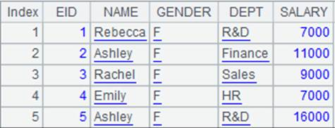
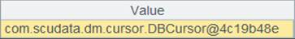
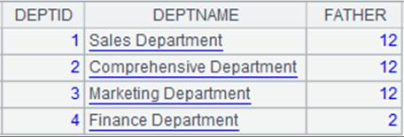

Description:
Attach the record filtering action to a cursor and return the original cursor while writing records that not satisfy the specified expression to a bin file.
Syntax:
cs.select(x;f)
Note:
The function attaches a record filtering action to cursor cs, which will compute expression x over each record of cursor cs, get records that make value of x true, return the original cursor cs and write the records that do not satisfy expression x into bin file f.
This is a delayed function.
Parameter:
|
cs |
A cursor |
|
x |
A Boolean expression |
|
f |
A bin file |
Return value:
Cursor
Example:
|
|
A |
|
|
1 |
=demo.cursor("select * from dept") |
Return a cursor:  |
|
2 |
=file("dept.btx") |
Generate a bin file object. |
|
3 |
=A1.select(DEPTID<5;A2) |
Attach a computation to cursor A1, which will get records that meet DEPTID <5, return cursor A1 and write records that cannot meet the condition to bin file dept.btx:  |
|
4 |
=A1.fetch() |
dept.btx will be really generated after data is really fetched out from cursor A1; below is data in cursor A1 where the computation is executed (it would be better that data is fetched in batches when data amount is large):  |